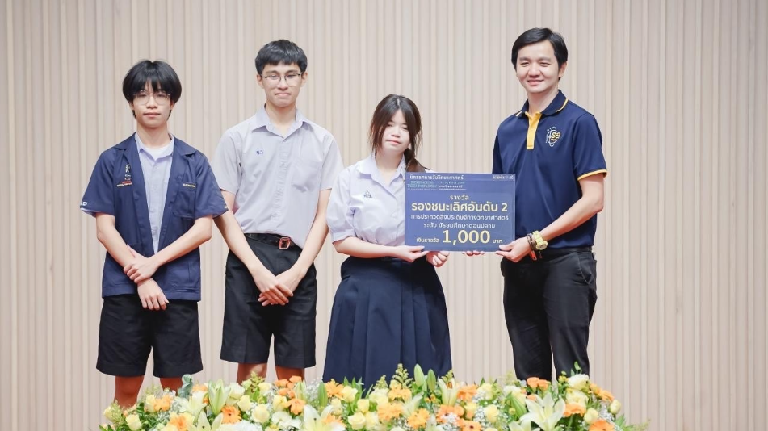
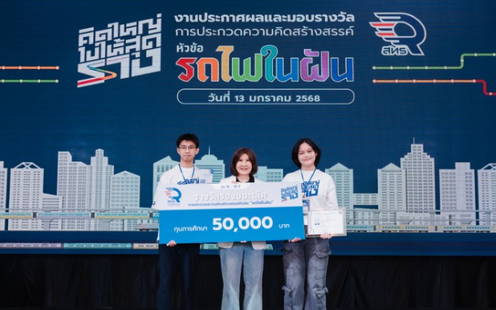
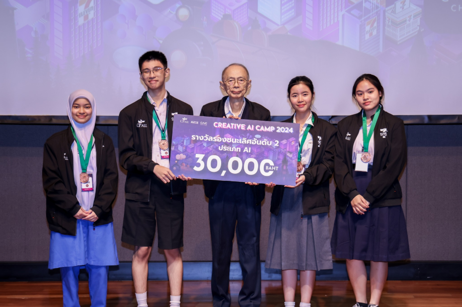
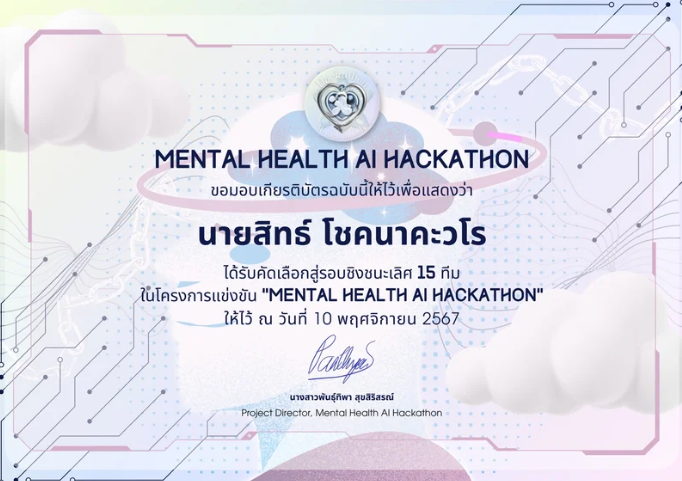
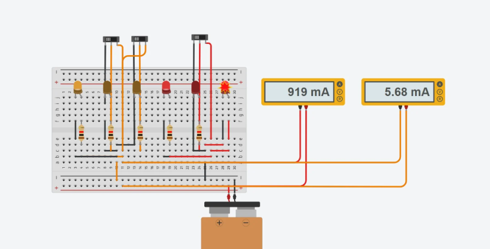
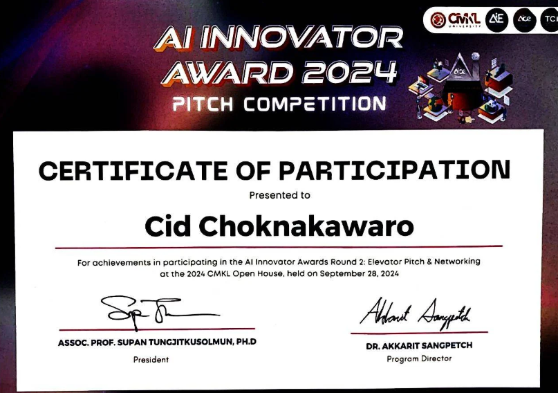

Programming
Prototype-focused coding for AI experiments, APIs, and applied product workflows.
AI / Computer Engineering / Full Stack
Incoming computer engineering student building practical AI systems across forecasting, computer vision, cybersecurity, and real-world hackathon products.
Profile
I am an incoming first-year university student with a strong interest in computer science and artificial intelligence. I have experience working on projects and participating in competitions related to computers and informatics.
I am committed to continuously improving myself and exchanging experiences with others in order to grow and create new innovations in the future.
Capabilities
Prototype-focused coding for AI experiments, APIs, and applied product workflows.
Forecasting, computer vision, LLM chatbot concepts, and model evaluation.
Web interfaces, question-answer systems, demo flows, and product-facing AI tools.
API hosting and deployment thinking for scalable project demonstrations.
Structured investigation, experimentation, and analysis for technical projects.
Competition storytelling, business application framing, and team mentoring.
Selected Work

Aug 2025
Developed an AI system for nail disease diagnosis using ResNet50 with 92.5% accuracy, connected it to IoT, and hosted the API on cloud infrastructure.
Science Day KMITL, 2nd Runner-up
Dec 2024 - Jan 2025
Developed a rail logistics simulation using Open Source Rail Designer and forecasting models to optimize routes and resource allocation.
Think Beyond Track, 1st Runner-up
Aug - Oct 2024
Developed an AI model to forecast expenses in collaboration with KUDSAN, training more than seven time-series models and reaching 16.16% MAPE.
Creative AI Camp by CP All, 2nd Runner-up
Nov 2024
Developed an LLM-powered chatbot to support mental health and designed a website to help users access psychological resources.
Mental Health AI Hackathon, Finalist
Nov 2024
Built an AI system for real-time monitoring of urban infrastructure, using signal processing to detect anomalies in electrical data.
AI Thailand Hackathon EP.2, Finalist
Sep 2024
Developed a computer vision virtual try-on system for fashion and presented real-time display in an IoT-related booth.
AI Innovator Award, FinalistExperience
Developed AI models to solve business-related problems across computer vision and forecasting, while analyzing data to create insights and support decision-making.
Gave advice on AI-related topics, coding, project structure, and presentation. Helped solve technical problems during a 24-hour competition.
Studied Linux, Windows, computer network security protocols, cryptography, PKI, basic security regulations, and practiced building a virtual cybersecurity lab environment with VirtualBox.
Incoming student at Sirindhorn International Institute of Technology with a 50% scholarship.
Science, Mathematics, Technology and Environment Program.
Contact